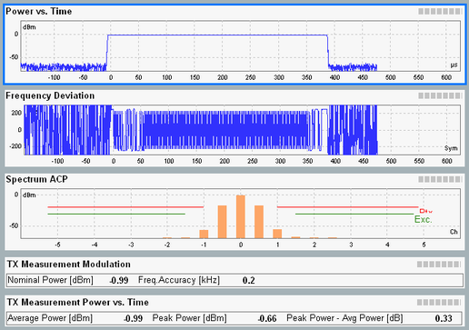

Measurement Diagrams (LE)
The "Overview" dialog shows several or all the detailed views in a "Multi Evaluation" tab.

Bluetooth multi-evaluation: overview (LE)
The diagrams contain the following results:
- "Power vs. Time": Absolute measured signal power in dBm in a selectable time interval.
- "Frequency Deviation": Measured frequency deviation in kHz in a selectable time interval.
- "Spectrum ACP": Bar graph or table with adjacent channel power (ACP) results, either
– For the 21 half-channels (1 MHz wide) centered at fTX – 10 MHz to fTX + 10 MHz, where fTX is defined by the selected RF "Frequency" ("ACP+/-5 channel" mode) or – For the 81 half-channels (1 MHz wide) centered at 2401 MHz, 2402 MHz ... 2481 MHz ("LE All Channels" mode)
See "Spectrum ACP Results (LE)" for details.
"LE All Channels" mode is only available with test packets using LE uncoded PHY (LE 1M PHY, LE 2M PHY). LE coded PHY and advertiser packets are not supported in "LE All Channels" mode.
For query of the diagram contents via remote control, see "Trace Results".